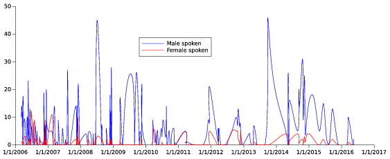

Vozyvoto
Vozyvoto (voice and vote) is a study of group participation (both in terms of speaking and being addressed by other speakers) in the proceedings of government assemblies. It is an information extraction over open data under the IE4OpenData project.
Current demo
The current demo was put together during the 3rd Hack(at)ONG in Cordoba, Argentina in September 2016. It analyzes the participation of female representatives in the congress floor, a topic of interest for FUNDEPS which (among many other things) studies the impact of mandatory gender quotas in the Argentinian ballot.
It involves (see Hackatong2016.md for details):
- Crawling of the transcriptions of the sessions.
- Crawling of the attendee sheets.
- Gender identification in the attendee sheets.
- Identification of people in the transcripts.
- Counting identified people by gender.
The current system was built during the hackathon using a combination of shell scripts, pandoc, iconv, perl and OpenNLP. The gender identification component is based on the Spanish Wikipedia lists of unambiguous male and female names (and it is available as a separate project). The entity linking (person disambiguation) component is the most rudimentary piece and uses a heuristic point system for attributing a phrase identified as a person mention by OpenNLP to one of the representatives present.
The total amount of text processed is as follows:
- Raw data (including formatting): 161Mb
- Text data: 107Mb
- Words: 2M
- Sessions: 425 usable, 475 total
- Years: 2001-2016
- Total people to link: 887
This data is available for download: http://duboue.net/download/vozyvoto2016ds.zip
Team
Keywords demo
This demo was put together after the hackathon. It is a live demo using plot.ly graphs. Beware: it is a large download. Launch the demo.